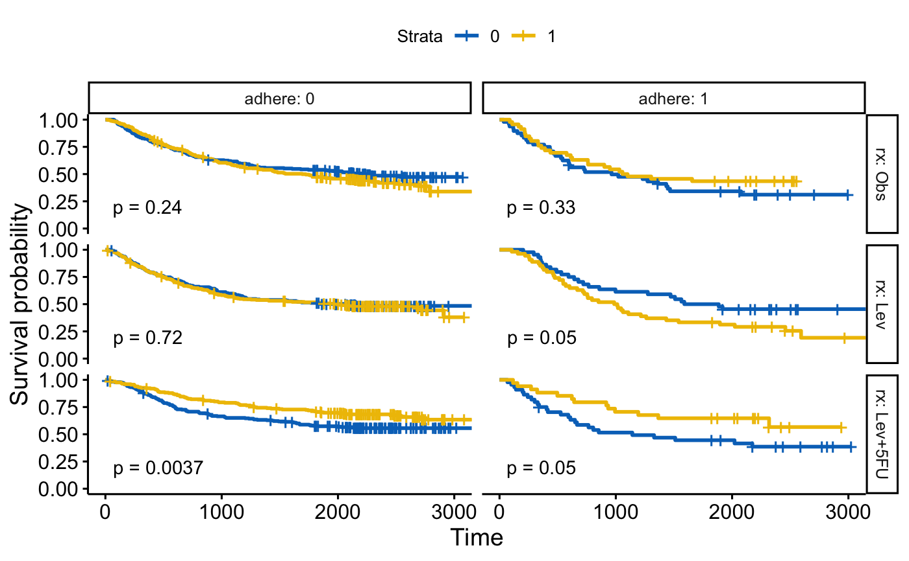

Facet Survival Curves into Multiple Panels
Draw multi-panel survival curves of a data set grouped by one or two variables.
ggsurvplot_facet(fit, data, facet.by, color = NULL, palette = NULL, legend.labs = NULL, pval = FALSE, pval.method = FALSE, pval.coord = NULL, pval.method.coord = NULL, nrow = NULL, ncol = NULL, scales = "fixed", short.panel.labs = FALSE, panel.labs = NULL, panel.labs.background = list(color = NULL, fill = NULL), panel.labs.font = list(face = NULL, color = NULL, size = NULL, angle = NULL), panel.labs.font.x = panel.labs.font, panel.labs.font.y = panel.labs.font, ...)
Arguments
- fit
- an object of class survfit.
- data
- a dataset used to fit survival curves. If not supplied then data will be extracted from 'fit' object.
- facet.by
- character vector, of length 1 or 2, specifying grouping variables for faceting the plot. Should be in the data.
- color
- color to be used for the survival curves.
- If the number of strata/group (n.strata) = 1, the expected value is the color name. For example color = "blue".
- If n.strata > 1, the expected value is the grouping variable name. By default, survival curves are colored by strata using the argument color = "strata", but you can also color survival curves by any other grouping variables used to fit the survival curves. In this case, it's possible to specify a custom color palette by using the argument palette.
- palette
- the color palette to be used. Allowed values include "hue" for the default hue color scale; "grey" for grey color palettes; brewer palettes e.g. "RdBu", "Blues", ...; or custom color palette e.g. c("blue", "red"). See details section for more information. Can be also a numeric vector of length(groups); in this case a basic color palette is created using the function palette.
- legend.labs
- character vector specifying legend labels. Used to replace the names of the strata from the fit. Should be given in the same order as those strata.
- pval
- logical value, a numeric or a string. If logical and TRUE, the p-value is added on the plot. If numeric, than the computet p-value is substituted with the one passed with this parameter. If character, then the customized string appears on the plot. See examples - Example 3.
- pval.method
- whether to add a text with the test name used for
calculating the pvalue, that corresponds to survival curves' comparison -
used only when
pval=TRUE - pval.coord
- numeric vector, of length 2, specifying the x and y coordinates of the p-value. Default values are NULL.
- pval.method.coord
- the same as
pval.coordbut for displayinglog.rank.weightsname - nrow, ncol
- Number of rows and columns in the pannel. Used only when the data is faceted by one grouping variable.
- scales
- should axis scales of panels be fixed ("fixed", the default), free ("free"), or free in one dimension ("free_x", "free_y").
- short.panel.labs
- logical value. Default is FALSE. If TRUE, create short labels for panels by omitting variable names; in other words panels will be labelled only by variable grouping levels.
- panel.labs
- a list of one or two character vectors to modify facet label text. For example, panel.labs = list(sex = c("Male", "Female")) specifies the labels for the "sex" variable. For two grouping variables, you can use for example panel.labs = list(sex = c("Male", "Female"), rx = c("Obs", "Lev", "Lev2") ).
- panel.labs.background
- a list to customize the background of panel
labels. Should contain the combination of the following elements:
-
color, linetype, size: background line color, type and size -
fill: background fill color.
-
- panel.labs.font
- a list of aestheics indicating the size (e.g.: 14), the face/style (e.g.: "plain", "bold", "italic", "bold.italic") and the color (e.g.: "red") and the orientation angle (e.g.: 45) of panel labels.
- panel.labs.font.x, panel.labs.font.y
- same as panel.labs.font but for x and y direction, respectively.
- ...
- other arguments to pass to the function
ggsurvplot.
Examples
library(survival) # Facet by one grouping variables: rx #:::::::::::::::::::::::::::::::::::::::::::::::::::::::: fit <- survfit( Surv(time, status) ~ sex, data = colon ) ggsurvplot_facet(fit, colon, facet.by = "rx", palette = "jco", pval = TRUE)# Facet by two grouping variables: rx and adhere #:::::::::::::::::::::::::::::::::::::::::::::::::::::::: ggsurvplot_facet(fit, colon, facet.by = c("rx", "adhere"), palette = "jco", pval = TRUE)# Another fit #:::::::::::::::::::::::::::::::::::::::::::::::::::::::: fit2 <- survfit( Surv(time, status) ~ sex + rx, data = colon ) ggsurvplot_facet(fit2, colon, facet.by = "adhere", palette = "jco", pval = TRUE)